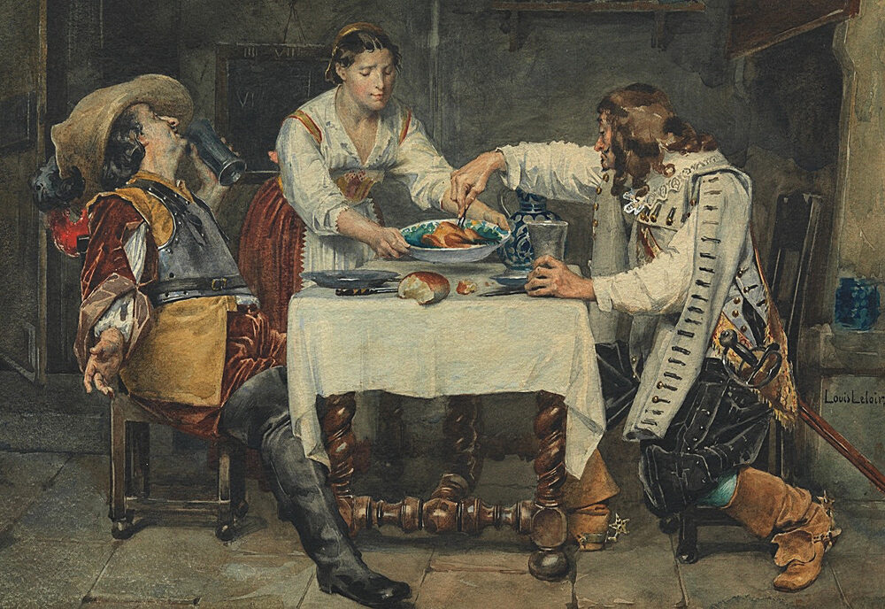

A2 · Food & Dining
The Text
Play the audio and follow along, then read it again on your own. Hover over a highlighted word to see what it means.
Listen & Read
Ordering at a New York Pizzeria
A family orders dinner — including the part visitors to the US find hardest: the tip.
The Bennett family — Mark, his wife Laura and their son Kevin — walk into Joe's Pizza on a cold evening. The place smells of fresh dough, and it is loud with conversation.

Server: Hi there, welcome to Joe's! Table for three?
Mark: Yes, please. We've heard a lot about this place — we'd love to try some real New York pizza.
Server: You've come to the right spot. Would you like a classic cheese pizza, or something a little more adventurous?
Laura: Let's be adventurous. What do you recommend?
Server: The pepperoni is always popular. But if you want something special, try the Sicilian with sausage and peppers. That's the one regulars keep coming back for.
Kevin: Can we get garlic knots too, Dad?
Mark: Of course we can. We're not leaving without the garlic knots.
Server: Great. One large Sicilian with sausage and peppers, and an order of garlic knots. Anything to drink?
Mark: Three waters, please.
Laura: And a soda for Kevin, if that's all right.
Server: Sure. We have Coke, Sprite or Fanta.
Kevin: Fanta, please.
Server: You got it. I'll bring the drinks right out.
Forty minutes later, the pizza is gone and the server brings the check.
Server: Here you go. That comes to twenty-six fifty, whenever you're ready.
Mark: Thanks. Here's thirty-two — keep the change.
Server: Thank you very much! Have a good night, and come see us again.
Outside, Laura asks Mark why he left five and a half dollars on a twenty-six dollar meal. In the United States, she explains, servers are usually paid a low base wage and depend on tips. Leaving about eighteen to twenty percent at a sit-down restaurant is normal, and leaving nothing would be a real insult. Mark had left just over twenty percent.
"So it's not really optional," Kevin says.
"Not at a place like this," his mother says. "It's part of the price."
Vocabulary
- the check — the piece of paper showing what you owe (British English: the bill)
- a tip — extra money you leave for the person who served you
- Keep the change. — what you say when the server should keep the extra money as a tip
- a regular — a customer who comes to the same place often
- to recommend — to suggest something because you think it is good
- a soda — a sweet fizzy drink (American English; British: a fizzy drink)
- You got it. — informal American English for "yes, certainly"
- sit-down restaurant — a restaurant where a server brings food to your table
Interactive Exercises
Practice
Complete each exercise, then click Submit to see your score and an explanation for every answer.
Speaking & Writing
Discussion
There are no right answers here — use these to practice speaking, or write a short answer to each.
- How does tipping work where you live? Is it expected, optional, or unusual?
- Role-play this scene with a partner: one of you is the server, the other orders a meal, asks for a recommendation, and pays.
- Kevin says tipping is "not really optional". Do you think a tip should be part of the price instead? Why?
- Write a short dialogue (about 8 lines) in which you order food and ask two questions about the menu.